Conheça, neste conteúdo, as principais funções da administração, as quais, com certeza, você precisará para exercer sua função de técnico em contabilidade, pois uma empresa sem planejamento, organização, direção e controle dificilmente conseguirá se manter no mercado.
Na prática, o que é administrar?
Administrar, no sentido amplo da palavra, compreende gerenciar uma empresa, uma casa, a vida profissional, a trajetória pessoal, entre outros. Independentemente do contexto, administrar é um processo dinâmico e contínuo. Há um fluxo a ser observado e conduzido em direção a resultados, com base em processos decisórios que acontecem com frequência – algumas vezes, com certa previsão, mas, em muitos outros casos, de forma imprevisível.
Administrar significa conduzir racionalmente as atividades. No caso de uma organização, por exemplo, significa conduzir as atividades eficaz e eficientemente, buscando os melhores resultados organizacionais.
Porém, é permitido, por exemplo, refletir sobre o tema abordado em diferentes espaços. Considere a atuação que você desempenha como técnico em contabilidade, pois é um desafio administrar as demandas visando a concretizá-las de forma produtiva.
Administrar pressupõe, portanto, planejar, organizar (estruturar), dirigir e controlar todas as atividades, que são diferenciadas pela divisão do trabalho (CHIAVENATO, 2014, p. 1). Administrar é, então, uma ação fundamental para a existência, a sobrevivência e o sucesso das organizações e dos profissionais de todas as áreas.
Inserido nesse contexto, você, como profissional técnico em contabilidade, será desafiado a fazer a manutenção das atividades para agilizar dados e informações. A precisão dos dados interfere no posicionamento da empresa e no mercado, pois eles são fundamentais para os processos decisórios.
Veja a seguir as principais funções da administração, as quais são planejar, organizar, dirigir e controlar. Lembre-se de que você precisará conhecer e executar cada uma delas em seu dia a dia para que alcance o sucesso em todas as áreas de sua vida.
A primeira função da administração é o planejamento. É importante reconhecer que toda atividade, para ser adequadamente executada, deve conter um planejamento. Tal prática faz parte do cotidiano das organizações e das pessoas. Planejar, então, é uma ação necessária para as pessoas (tanto na vida pessoal quanto na vida profissional) e fundamental para o crescimento das organizações.
Na contabilidade, o planejamento é uma ferramenta fundamental que facilita a gestão organizacional, fornecendo dados e informações para a tomada de decisões.
O planejamento é importante para a gestão tanto das organizações quanto da vida profissional e/ou pessoal. Tudo inicia com os objetivos, passando pela execução e chegando ao controle. Em todas as etapas, percebe-se a necessidade de planejamento.
Para que o planejamento seja desenvolvido, é fundamental:
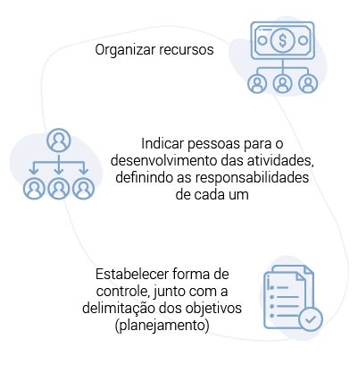 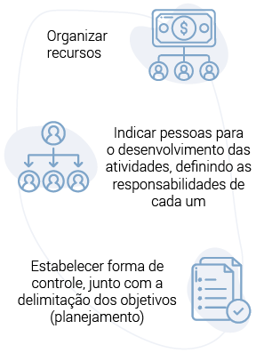Dessa forma, é possível ver que as funções estão, de certa forma, interligadas e são interdependentes. Não existe planejamento sem organização, bem como não há organização e controle sem delimitação dos objetivos (planejamento).
O planejamento deve ser visto como um processo, o qual é praticado pelas organizações basicamente da seguinte forma:
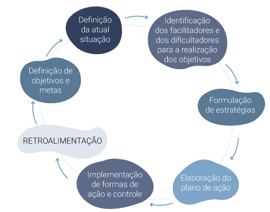 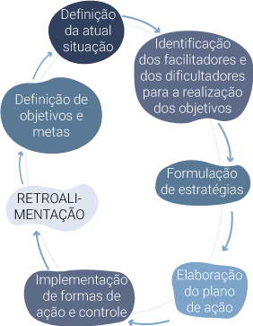
Figura 1 – Modelo de processo de planejamento
Fonte: adaptado de Farias (2013, p. 169).
O esquema apresenta o processo de planejamento por meio de um ciclo de retroalimentação. O primeiro item compreende a etapa de definição da atual situação; o segundo, a identificação dos facilitadores e dos dificultadores para a realização dos objetivos; o terceiro, a formulação de estratégias; o quarto, a elaboração do plano de ação; o quinto, a implementação e o controle; chegando novamente ao início do processo, referente à definição de objetivos e metas.
Portanto, na pr√°tica profissional, ser√° necess√°rio reconhecer o planejamento em etapas.
Primeiramente, parte-se do estabelecimento de metas/objetivos. Para definir objetivos, é fundamental centrar o reconhecimento deles a partir da observação das atividades que geram impacto nos resultados e podem colaborar para otimizar os recursos.
Portanto, os objetivos não devem ser fixos. É preciso constante equilíbrio entre o desafio e o resultado. Moldar as metas de acordo com o ambiente externo (mercado) também é importante.
Alguns exemplos de objetivos encontrados nas organizações são:
Em seguida, define-se a situação atual com relação aos objetivos traçados. Para tanto, os responsáveis devem analisar a situação e avaliar os recursos e as pessoas disponíveis.
Nessa etapa, a informação representa um diferencial. Quanto mais informação, mais profundidade de análise situacional. Com isso, identificam-se os elementos facilitadores e dificultadores.
Nesse contexto, serão considerados fatores externos e internos, os quais influenciam a organização.
Em seguida, são formulados as estratégias e o plano de ação; e, em conjunto, delimitadas as formas de controle.
Por que é importante planejar?
O planejamento:
Depois de realizar o planejamento, definindo objetivos e metas, chegou a hora de organizar tudo o que foi proposto.
Sobre organização, a primeira informação que você precisa saber é que o delineamento da estrutura organizacional da empresa tem relação direta com os resultados operacionais. A organização impacta o alcance dos objetivos.
A função de organizar, portanto, é a ordenação e o agrupamento de atividades e recursos, de tal forma que seja possível alcançar os objetivos e os resultados estabelecidos na etapa do planejamento (OLIVEIRA, 2013, p. 65).
Contudo, as estruturas não são sempre as mesmas. As grandes organizações têm estruturas mais complexas, explícitas e formalizadas. Já as organizações de pequeno porte apresentam esquemas simples para definir quem realiza cada uma das atividades, como explicou Maximiano (2011).
Você pode trabalhar na contabilidade de uma grande empresa ou em um pequeno escritório contábil, mas a organização precisará fazer parte do dia a dia dessas companhias, independentemente do porte da empresa.
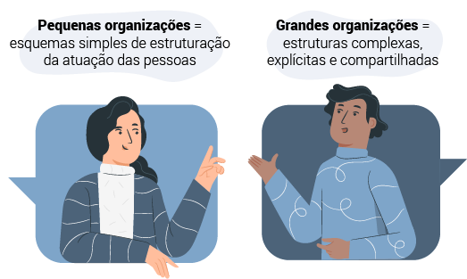 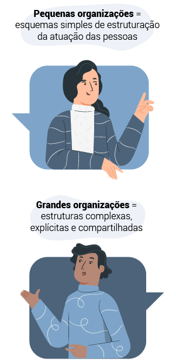Pequenas organizações = esquemas simples de estruturação da atuação das pessoas.
Grandes organizações = estruturas complexas, explícitas e compartilhadas.
São muitas as obrigações às quais a contabilidade precisa atender mensalmente, por isso é importante que se tenha uma organização ágil e eficaz, desde o controle de documentos e processos até a gestão de pessoas. Quanto mais organizado for o processo, maior será a produtividade.
Observe a seguir o esquema que apresenta os subprocessos da função de organizar, segundo Maximiano (2011, p. 180):
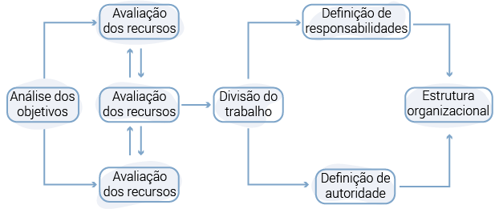 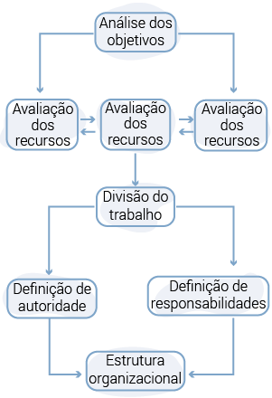
Figura 2 – Principais etapas do processo de organização
Fonte: Maximiano (2011, p. 180).
O esquema apresenta as principais etapas do processo de organização, iniciando com a análise dos objetivos, que está relacionada à avaliação dos recursos; passando pela divisão do trabalho, que está relacionada à divisão do trabalho e interligada à definição de responsabilidades e à definição de autoridade; chegando, por fim, ao fechamento da estrutura organizacional.
Conforme estudado, primeiramente, é necessário analisar os objetivos e o trabalho a ser realizado para que as metas sejam atingidas. Em seguida, é fundamental dividir o trabalho, conforme critérios adequados para a consolidação dos objetivos.
A próxima etapa pressupõe a indicação das responsabilidades para a realização do trabalho. Posteriormente, é importante determinar os níveis de autoridade. Por fim, sempre mantendo um fluxo, deve-se desenhar a estrutura organizacional, adaptando-a conforme a necessidade. Lembre-se de que não são etapas estagnadas. Ao contrário, elas se complementam o tempo todo.
Como profissional técnico em contabilidade, sempre considere a definição dos objetivos em todas as tarefas. Ao delineá-los, o trabalho deve ser dividido em unidades, blocos, operações ou tarefas, de acordo com critérios estabelecidos por você para que as metas sejam alcançadas apropriadamente. Com tal prática, você otimiza o seu tempo e realiza as atividades de forma mais assertiva, evitando, inclusive, retrabalho.
Imagine que você acaba de ser contratado para trabalhar como técnico em contabilidade em um escritório contábil, e o contador responsável solicitou que você realize as seguintes tarefas:
Perceba que são várias tarefas, mas, se você for um profissional que trabalha com planejamento e organização, conseguirá realizá-las com agilidade e da melhor maneira possível.
Para conduzir adequadamente todas as atividades, é necessário planejar e organizar a ordem mais adequada para realizar as tarefas. A função de organizar maximiza os resultados e, conforme o exemplo, amplia os resultados profissionais. Contudo, em um contexto de uma empresa, deve-se considerar o impacto nos resultados da operação.
A base da divisão do trabalho está nos objetivos. Compreendendo o objetivo a ser realizado, é possível dimensionar o trabalho necessário, para, então, dividi-lo entre pessoas ou grupo de pessoas.
Todas as empresas organizam a divisão do trabalho visando a conduzir a ação na realização de tarefas distintas, com foco nos objetivos planejados. Definidos os objetivos, o trabalho pode ser dividido em unidades, blocos, operações ou tarefas, de acordo com os critérios mais indicados para a maximização da produtividade.
Depois de realizar todo o planejamento e a organização, chegou o momento da terceira função da administração, a direção. A direção é exercida por figuras de autoridade, como chefes, gerentes, coordenadores, presidentes, gestores etc. Os indivíduos que desempenham esses papéis são responsáveis pela função de direção. À direção é conferido o poder de determinar a forma de utilizar os recursos disponíveis.
A autoridade pode ser atribuída a uma pessoa, a unidades de trabalho, como o departamento de auditoria, ou a uma comissão de sindicância. Segundo Maximiano (2011), “a autoridade é a contrapartida da responsabilidade”.
A hierarquia gerencial, na maioria das organizações, está dividida em quatro níveis principais: presidente (executivo); diretores (executivos); gerentes intermediários; e supervisores e equipes autogeridas (MAXIMIANO, 2011, p. 186).
Observe o esquema a seguir:
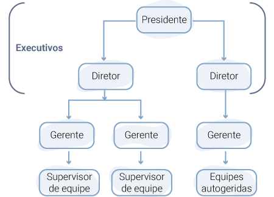 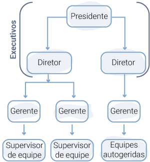Figura 3 – Hierarquia nas organizações
O esquema apresenta um exemplo de divisão hierárquica da organização, com executivos no topo, ou seja, presidente e diretores; após, a gestão intermediária, composta pelos gerentes; e, logo abaixo, os supervisores de equipe e as equipes autogeridas.
Analisando hierarquicamente, no topo do esquema estão os executivos. Eles representam a alta administração e têm autoridade sobre todos os outros cargos.
Após, encontram-se os gerentes intermediários, que são os responsáveis por coordenar as áreas especializadas (produção, finanças, contabilidade, marketing, recursos humanos). Os gerentes intermediários são responsáveis por transformar os objetivos, definidos pelos executivos, em objetivos específicos, ou seja, mobilizar os recursos disponíveis (planejados e organizados pelos executivos) e controlar a realização das atividades.
Em seguida, estão os supervisores das equipes operacionais ou autogeridas (liderança exercida pelos próprios integrantes), as quais são responsáveis por realizar as tarefas e fornecer produtos e serviços aos clientes.
O líder, em todos os níveis, direciona os liderados para a realização de metas. Isso somente acontece quando os liderados aceitam e são motivados por aquele que desempenha o papel efetivo de líder. Para tanto, é preciso identidade de interesses entre as necessidades, os valores e as aspirações de todos os envolvidos, considerando as proposições do líder. É preciso identificar como realizar esse alinhamento e executar a função de direção.
Para refletir
Tente identificar as características do seu líder. Observe atentamente a missão e os valores da empresa e dedique a sua ação para praticar a missão. Dessa forma, os seus objetivos estarão alinhados aos da organização.
Todo líder, ao desenvolver a função de direção, precisa lidar com o conceito de amplitude de liderança. Em qualquer nível, o líder tem determinado número de pessoas para liderar. Esses profissionais podem estar agrupados em conjunto de cargos ou em outros departamentos. O número de pessoas define a amplitude de comando.
Veja agora a última função da administração: o controle. A função de controlar, como parte integrante das principais funções da administração, é um processo que procura assegurar a realização dos objetivos. Portanto, controlar consiste em comparar as atividades realizadas com aquelas que foram planejadas, sempre focando na realização de objetivos para atingir, assim, as metas propostas.
O processo de execução está relacionado ao controle, uma vez que pressupõe a realização das atividades planejadas. Para que as atividades sejam executadas de acordo com o planejado, os líderes utilizam o processo de controle (MAXIMIANO, 2011, p. 323).
Observe na figura a seguir o que os líderes procuram ao utilizar o processo de controle:
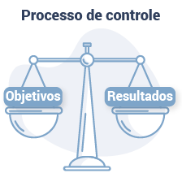Figura 4 – Processo de controle
A imagem apresenta uma balança com equilíbrio entre objetivos e resultados.
Caso seja identificado, no processo de controle, desequilíbrio entre o planejado e o alcançado, ações corretivas devem ser planejadas e executadas. Em seguida, devem ser novamente controladas, para manutenção do equilíbrio dos resultados da empresa. Porém, em algumas situações, as ações corretivas não são suficientes. Então, o desafio é rever os objetivos. Muitas vezes, o controle deles possibilita equilíbrio.
Igualmente a todos os demais processos da administração, o controle está presente em muitos aspectos da vida das pessoas e das organizações. Quando você consulta o seu saldo no banco, por exemplo, ou pesquisa um trajeto em um mapa, a finalidade é encontrar informação para que ela sustente o seu processo de decisão. No caso do extrato, você pode consultá-lo para decidir o que julga mais adequado: comprar o que deseja ou esperar o próximo mês.
As organizações produzem informações sobre os seus processos com o objetivo de mantê-las dentro de um padrão desejado (MAXIMIANO, 2011, p. 324). O controle, portanto, pode ser interpretado como um processo social.
Os códigos legais, os semáforos, os crachás e as faixas de sinalização, por exemplo, são instrumentos de controle social. Quando você identifica uma placa de “pare” em um cruzamento de carros, sabe que precisa parar. Os sinais de trânsito são exemplos de instrumentos de controle e organizam a circulação pelas cidades.
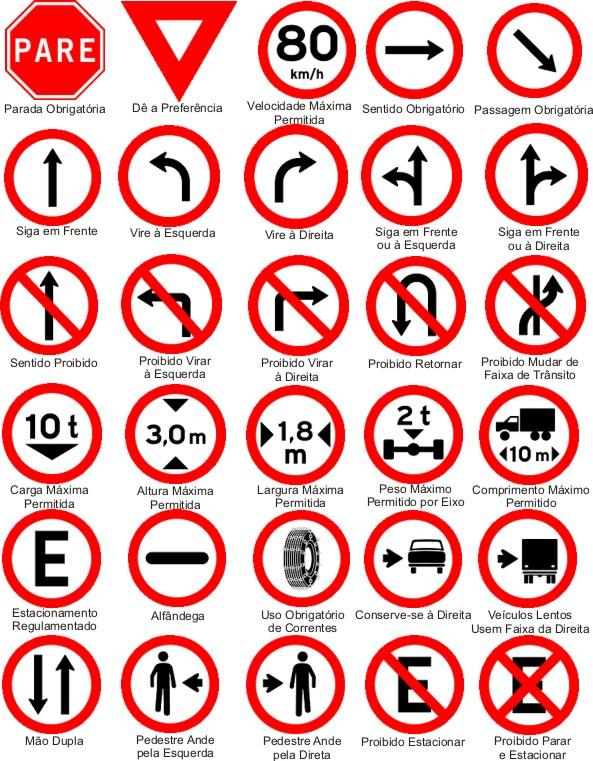
Figura 5 – Placas de trânsito
Fonte: <https://www.cursosdetransito.com.br/blog/2016/05/18/placas-de-transito-e-seus-significados/>.
A imagem contém exemplos de placas de trânsito, como: sentido proibido, proibido estacionar, passagem obrigatória, entre outros.
Cabe ressaltar que nem tudo pode ser previsto nas organizações. Portanto, após a execução de toda tarefa, é importante monitorá-la e controlá-la para que os resultados sejam avaliados. Caso eles não estejam alinhados aos objetivos propostos, as atividades devem ser ajustadas. Para todas as organizações, esse processo é dinâmico e constante.
Agora, pense nos seus objetivos profissionais e identifique se a sua prática possibilita alcançá-los. Caso afirmativo, persista e maximize os aspectos positivos da sua ação como técnico em contabilidade. Porém, se os objetivos não estão sendo atingidos conforme o planejado, pare e reveja a sua prática. Capacite-se constantemente e amplie o seu espaço de atuação no mercado de trabalho. Ofereça soluções e ideias inovadoras para as empresas, mostrando, assim, o seu diferencial.
Na função de controlar, o indivíduo (ou um grupo) trabalha como um piloto de avião, monitorando constantemente o aparelho (a organização) para que a rota seja mantida, evitando turbulência e buscando atingir o objetivo, que é chegar ao destino.
O processo de controlar possibilita que a organização decida sobre:
Figura 6 – Informações produzidas pelo processo de controle
Fonte: Maximiano (2011, p. 326).
O quadro demonstra os itens citados anteriormente, como garantir objetivos, resultados comparados com objetivos etc., os quais auxiliam na organização do processo de controle.
Para finalizar, os componentes do processo de controle são: padrões de controle, aquisição de informações, comparação, ação corretiva (também denominada de tomada de decisão) e recomeço do ciclo de planejamento. Cada um deles faz parte do processo de controlar. Lembre-se de todos, identifique-os nas organizações e insira-os na sua prática profissional.
Considerando o que você estudou até aqui, você, como profissional técnico em contabilidade, estará habilitado para fazer a manutenção das atividades em empresas de qualquer porte e de qualquer ramo de atuação. Ainda, com a prática, você poderá atuar em empresas de pequeno, médio e grande porte, multinacionais etc., sempre com o objetivo de agilizar dados e informações, os quais são fundamentais para os processos decisórios.
Isso significa que você está diretamente ligado ao aumento da rentabilidade, pela agilidade no movimento das informações, sendo responsável por manuseá-las e controlá-las.
Leia mais, conheça o mercado de trabalho e sempre planeje, organize, dirija e controle as suas demandas profissionais.


 Verificar se a documentação das empresas optantes pelo Simples Nacional já se encontra na empresa
Verificar se a documentação das empresas optantes pelo Simples Nacional já se encontra na empresa